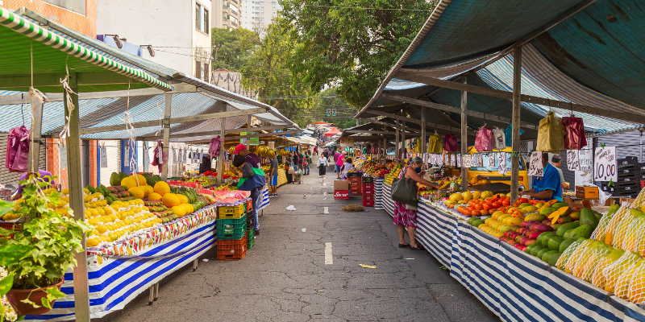

Preços aumentando na feira de quinta
Os preços dos alimentos na tradicional Feira de Quinta do nosso bairro Limoeiro têm deixado os moradores de cabelo em pé. Nas últimas semanas, os frequentadores da feira têm notado um aumento significativo nos valores de produtos como frutas, verduras e legumes. Esse aumento tem gerado preocupação entre os consumidores, que buscam entender as razões por trás dessas mudanças no mercado local.
"Isso está um absurdo! Nunca vi os preços tão altos por aqui. Antes, eu conseguia comprar uma sacola cheia de frutas e verduras com o mesmo valor que agora mal dá para levar metade", disse Dona Maria. Os preços começaram a subir a partir de 15 de outubro, de acordo com feirantes locais, devido a variações climáticas, aumento dos custos de transporte e pressões econômicas.
O aumento significativo nos preços da "Feira de Quinta" do bairro Limoeiro, que teve início em 15 de outubro, tem causado consternação entre os moradores. Variações climáticas afetaram a produção agrícola local, juntamente com o aumento dos custos de transporte e as pressões econômicas do país, contribuindo para essa disparada de preços. Os consumidores agora aguardam medidas para conter os aumentos e garantir que os alimentos continuem acessíveis, enquanto a comunidade busca entender as razões por trás dessas mudanças.